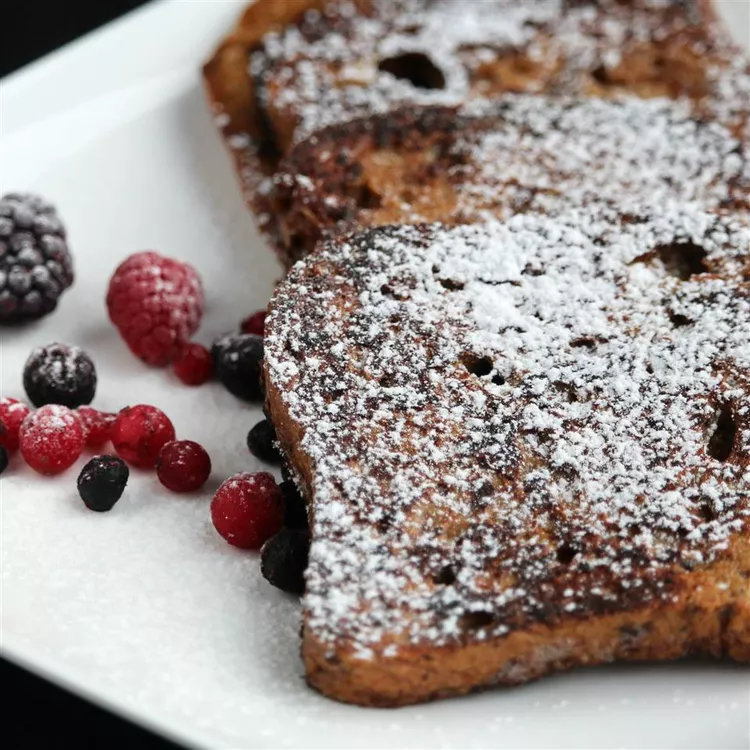

Gingerbread French Toast

Description
Enjoy the holiday season with a quick and delightful gingerbread-flavored French toast. Easy to make, it brings that warm,
festive feeling to your breakfast. Top it with butter and syrup or brown sugar for a delicious treat that captures the essence
of the holidays in every bite.
Ingredients
- 1/2 cup milk
- 2 eggs
- 1 tablespoon white sugar
- 2 teaspoons rum extract
- 1 teaspoon salt
- 1/4 teaspoon ground cinnamon
- 1/4 teaspoon ground nutmeg
- 1/4 teaspoon ground cloves
- 1/8 teaspoon ground ginger
- 4 slices of white bread
- 1 tablespoon butter
Steps
- In a bowl, whisk together milk, eggs, sugar, rum extract, salt, cinnamon, nutmeg, cloves, and ginger. Dip each bread slice
into the egg mixture, ensuring both sides are evenly coated.
- In a non-stick skillet over medium heat, melt butter. Add bread slices in a single layer and cook until both sides are golden
brown, approximately 3 minutes per side.
Success! You are done!
Cook Notes
- Top bread with more cinnamon, nutmeg, and clove to serve, if desired.
- Vegetable oil or cooking spray can be substituted for the butter.
- Vanilla extract can be substituted for rum extract.
- Wheat bread can be substituted for the white bread, if desired.
- This can also be cooked in an electric skillet.